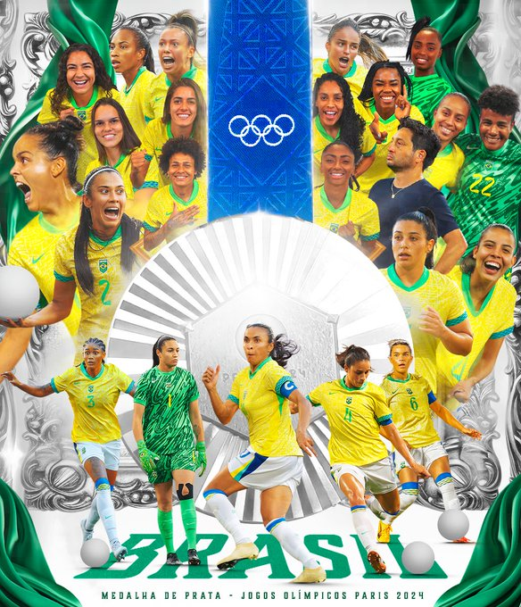

Em 2024, a seleção feminina voltou a jogar as Olimpíadas, agora em Paris, na França. Em um grupo conturbado, a Canarinho garantiu sua vaga nas quartas de final após ficar em terceiro lugar. Chegando às quartas, enfrentou e venceu as anfitriões, a equipe francesa, por 1 a 0. Já nas semifinais, voltou a enfrentar a Espanha, atual campeã do mundo e de quem havia perdido por 2 a 0 na fase de grupos, aplicando um surpreendente 4 a 2 diante das espanholas. Na final, enfrentou a seleção estadunidense de futebol em busca de um ouro inédito, porém saiu derrotada e ficou com a medalha de prata.
É considerada uma das melhores seleções de futebol feminino do mundo. Apesar de ter pouco (e, muitas vezes, nenhum) apoio de dirigentes, torcida e imprensa, pouco investimento no mercado (devido à pouca demanda) sempre está bem posicionada no Ranking da FIFA. Porém, não tem nenhum título expressivo de nível mundial.
Em 2021, de volta aos grandes torneios internacionais, o Brasil participou das Olimpíadas de Tóquio. Começou com goleada sobre a China por 5x0, empate em 3x3 com os Países Baixos e vitória magra sobre Zâmbia por 1x0. Passando em segundo lugar em seu grupo, as brasileiras toparam com o Canadá, e consequentemente caíram nos pênaltis por 4x3 após um empate em 0x0.
Disputou a Copa do Mundo de 2023, disputada na Austrália e Nova Zelândia, estreando com vitória de 4x0 contra a seleção do Panamá. Mas a seleção acabou sendo eliminada na primeira fase, após perder de 2x1 para a França e ficar no empate de 0x0 com a Jamaica. Após a eliminação decepcionante, a técnica Pia Sundhage foi demitida e substituída pelo técnico do Corinthians, Arthur Elias.